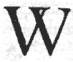

Old Style Handwriting and
Printers’ Ligatures, &c.
The Double U, or, VV=W
Source: Library of Congress
Thomas Jefferson Papers Collection.
John
Pervis: A Complete Collection of
all the Laws of Virginia now in force.
March 23 1661/62 - November 10, 1682
Printed in London,
ca.1683-1687
Our English alphabet is taken from the
classic Roman alphabet, which did not
contain the letters J, U, or W. These three letters came into being during the medieval
period. The letter V is an old letter, introduced by Roman Emperor Claudius in 44 C.E..
We often see it used as the letter U. Our letter W is a ligature, made of a pair of the letter
V. It is called double U because it was written UU or VV. We see that early printers
often used VV when they simply did not have a W in their type case. Below are three
different examples of the W from “The Generall Historie of Virginia,
New-England and the Summer Isles . . .” by Captaine Iohn (John) Smith, 1624.
Who loves to live at home . . .

|